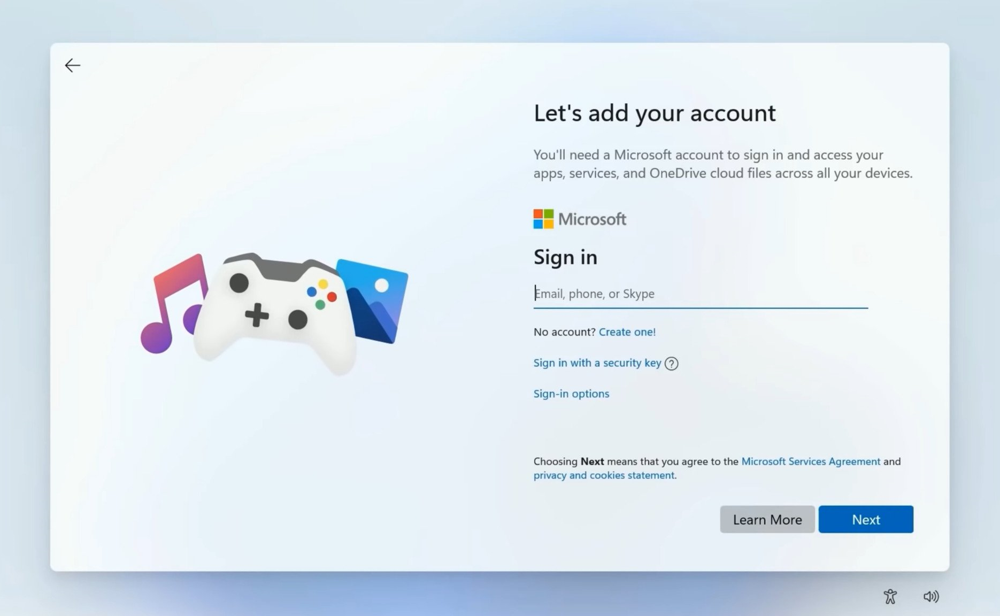

Starting with Windows 8 in 2012, Microsoft decided to introduce a new type of user accounts — online accounts. Their main difference is their dependence on the Microsoft accountA Microsoft account (formerly Windows Live ID) is a online account service developed by Microsoft. It is used to access the company's services such as Outlook, OneDrive or Office., which allows user to access their user account on multiple devices and thus syncronize their settings and Microsoft Store apps. And while this was a good idea in theory, in practice it turned into a show of the company's greed. When installing Windows 11, the system will force you to connect to the Internet and to create/log in to online account, with almost no means to use classic offline user account aside from using the Command Prompt. When creating the new user account in Settings app, the system will also try to force you to create an online account. However, here it is much easier to avoid, as user may simply press "I don't have this person's sign-in information" link and that's it. Still, it is really inconvenient.
|
 |
|
"Let's add your account" window in Windows 11 setup. Notice the lack of offline account option.
|
Local Account Wizard was created to counter Microsoft's efforts to force users to create unnecessary online accounts that will mostly be used for telemetry and not for actual service usage.